MaD-PF: Modular and Differentiable Particle Filter for Cross-Environment SE(3) LiDAR Localization
The first end-to-end differentiable particle filter for real-world SE(3) 3D LiDAR localization — using Unit Dual Quaternion particles, modular learned motion and observation models, and differentiable resampling to achieve zero-shot cross-environment and cross-robot generalization.
Abstract
Multi-modal robust localization requires estimating uncertainty over multiple pose hypotheses while adapting perception and motion models across environments and robotic platforms. Classical particle filters provide a principled Bayesian framework for this problem, but their manually specified models and discrete resampling operations limit integration into end-to-end trainable robotic systems, while learning-based localization approaches typically lack the modularity and generalizability.
Differentiable particle filters promise to combine these two worlds by replacing filtering components with differentiable alternatives, but existing methods remain confined to either planar state spaces, visual or simulated observations, or single-platform evaluation. We present the first end-to-end differentiable particle filter capable of real-world cross-environment SE(3) LiDAR localization by using a unit dual quaternion formulation, 3D-LiDAR observations, and differentiable motion, observation, and resampling modules.
Within this framework, we thoroughly compare different submodules and propose improvements that demonstrate increased robustness on held-out datasets and, in parallel, 89% latency reduction for the observation model. We evaluate the framework on real-world LiDAR data, demonstrating zero-shot RMSE of 0.398 m or better in unknown environments, on different robotic platforms, or both, and we outperform SotA learning-based localization systems requiring 2.5× less training time.
Key Results
Method
MaD-PF combines a differentiable SE(3) state representation with modular, independently trainable motion, observation, and resampling components. Each stage can be pretrained and ablated separately before end-to-end (E2E) refinement. The unit dual quaternion (UDQ) encoding faithfully represents SE(3) with smooth manifold constraints, facilitating stable gradient flow throughout the full filter.
State Representation
Particles live on SE(3) encoded as Unit Dual Quaternions (UDQ). This 8-dimensional representation natively respects SE(3) = SO(3) × ℜ3 without orthogonality constraints or Euler-angle singularities, enabling stable E2E backpropagation.
Motion Model
Four models compared: Odometry-only (Gaussian perturbation), RealNVP (normalizing flow), AE-RealNVP and AE-MLP (anchored ensembles). Anchored ensembles explicitly model epistemic uncertainty for improved OOD robustness.
Observation Model
Two families: Projection-based (PPE, PPP) scores pillar-projected point clouds with a CNN comparator; Neural field (SDF, RE-SDF) scores via a continuous neural Signed Distance Field. The SDF offers lowest latency; PPP/PPE offer best accuracy.
Differentiable Resampling
Three strategies ablated: contraction-based, Gumbel-softmax, and Optimal Transport (OT). Gumbel-softmax is adopted as the default—it avoids particle deprivation while maintaining gradient flow with no significant accuracy penalty.
End-to-End Training
A composite loss—filter mean error, particle error, anchor loss, and ranking loss—enables direct E2E optimization across the full pipeline, skipping mandatory pretraining for the observation model and improving robustness in challenging sequences.
Environments & Platform
Experiments use a Clearpath Robotics Jackal equipped with a Livox Mid-360 LiDAR and on-board EKF odometry. The robot was deployed across four environments spanning indoor offices, an outdoor street, and a sloped loading area. Each environment contains 26 sequences—10 dynamic-speed, 10 fast-speed, 5 stationary, and 1 initialization.
Floor B
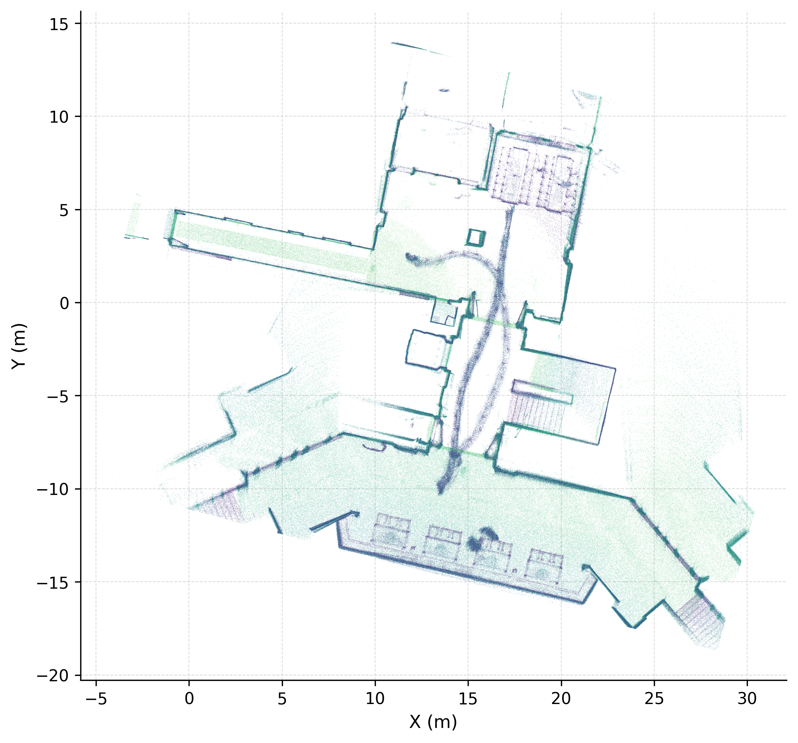
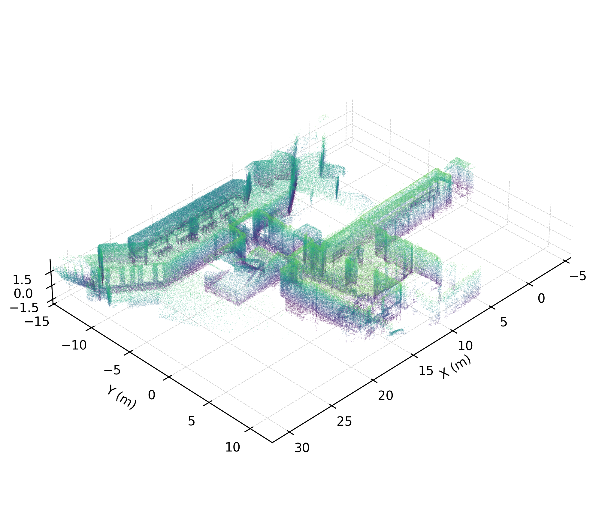
Floor C
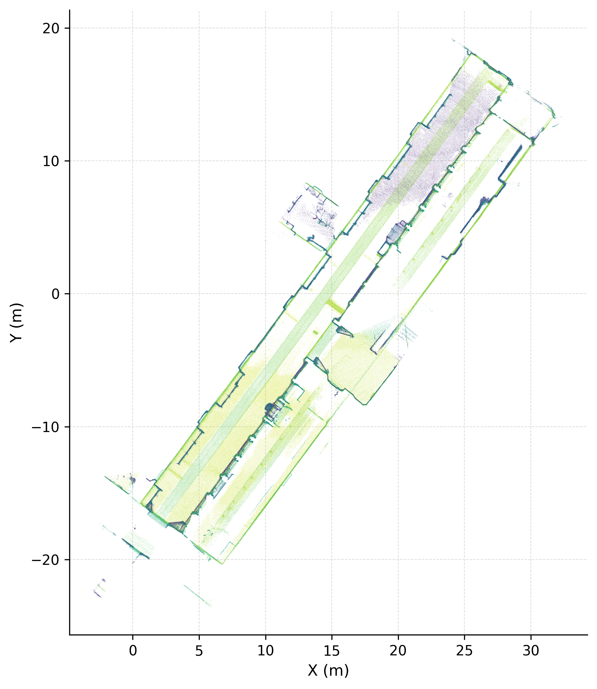
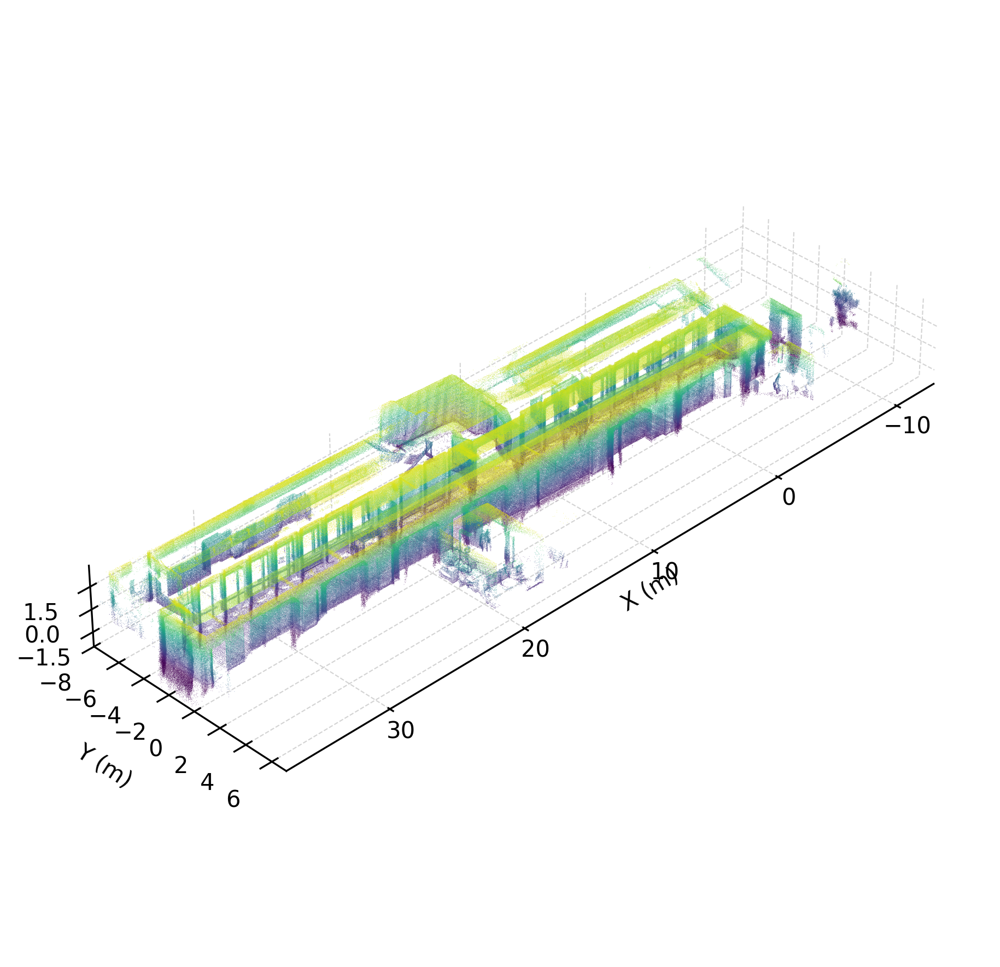
Street
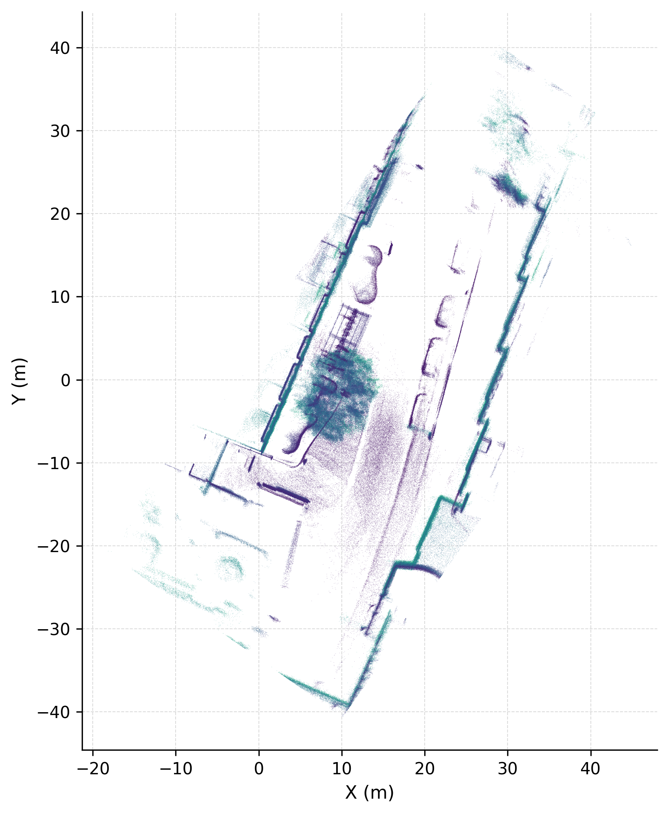
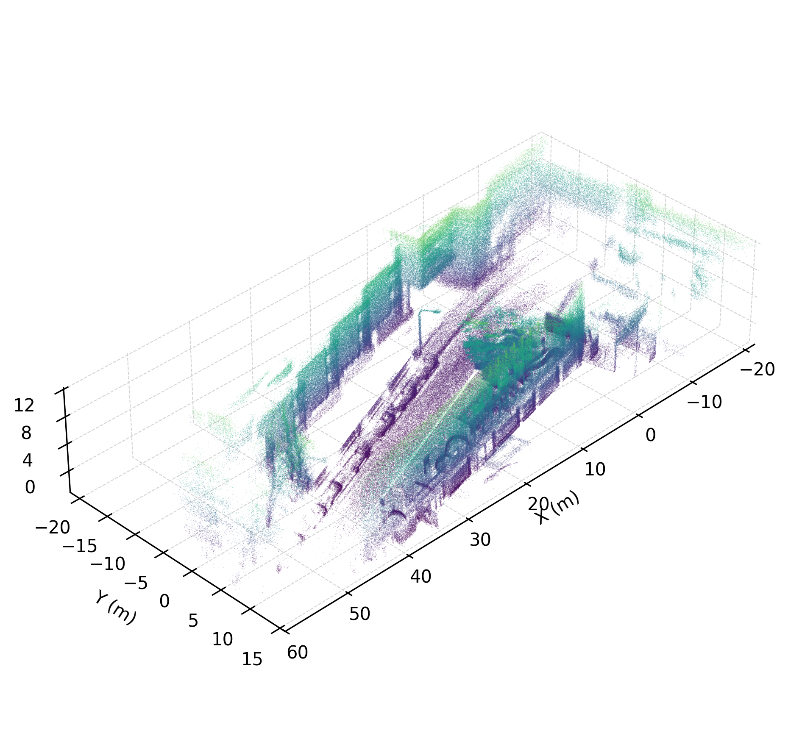
Ramp
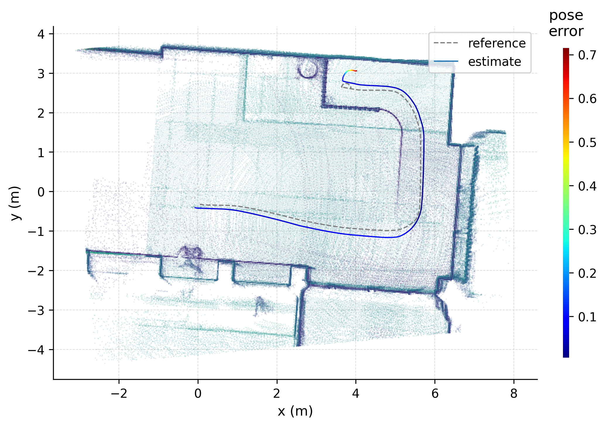
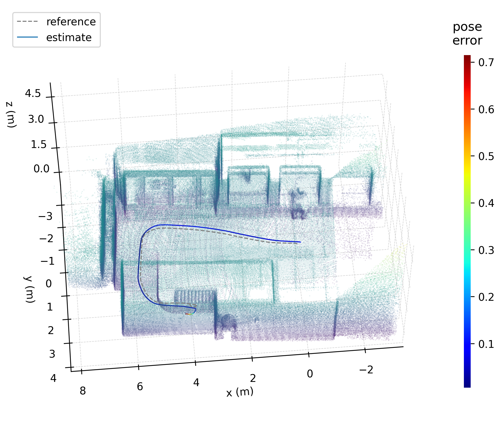
Experimental Results
Hold-One-Out Evaluation
MaD-PF is evaluated in a strict hold-one-out protocol: pretrained on three environments,
tested zero-shot on the fourth. Sequences d-6 (low speed) and f-7
(high speed) from the held-out dataset are reported. Mean RMSE μ [m] across
five seeds.
| Held-Out Dataset | Floor B | Floor C | Street | Ramp | ||||
|---|---|---|---|---|---|---|---|---|
| d-6 | f-7 | d-6 | f-7 | d-6 | f-7 | d-6 | f-7 | |
| Floor C (pretrained) | 0.027 | 0.086 | 0.046 | 0.235 | 0.034 | 0.408 | 0.110 | 0.176 |
| Street (pretrained) | 0.025 | 0.077 | 0.032 | 0.219 | 0.033 | 0.398 | 0.107 | 0.059 |
| Floor C + E2E | 0.028 | 0.095 | 0.030 | 0.283 | 0.041 | 0.434 | 0.091 | 0.135 |
| Street + E2E | 0.039 | 0.094 | 0.055 | 0.225 | 0.065 | 0.397 | 0.122 | 0.075 |
Table 1: Hold-one-out evaluation. Bold = best per column within pretrained rows.
Trajectory Visualization — Street → Ramp d-6
Single trajectories from the held-out dataset Ramp evaluated on Ramp d-6. Top-down (2D) and 3D views show the filter estimate vs. ground truth (dashed line), overlaid on the reconstructed point-cloud map.
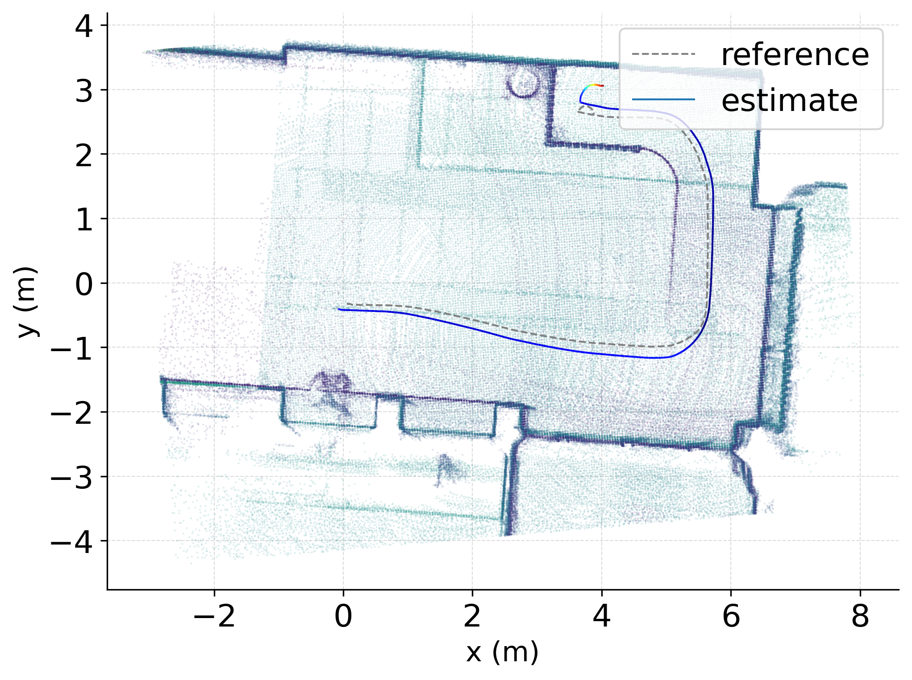
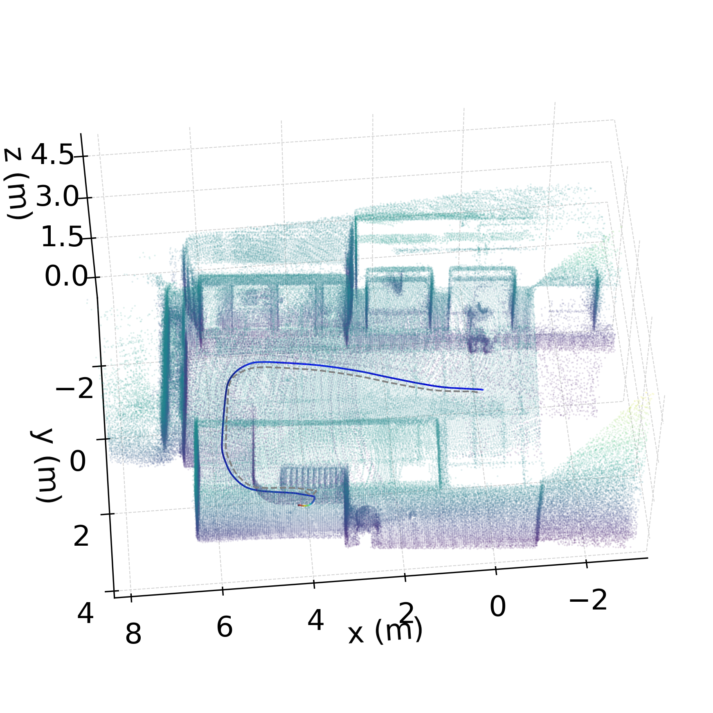
Benchmark Comparison
MaD-PF is compared against 3D LiDAR learning-based baselines DeLORA and EfficientLO-Net, both extended with a Point-to-Point ICP map backend for a fair comparison. MaD-PF outperforms both baselines on most sequences and is the only method to handle the challenging Ramp f-7 scenario reliably. It trains 3.6× faster than DeLORA and 2.5× faster than EfficientLO-Net.
| Method | Floor B | Floor C | Street | Ramp | Training Time | ||||
|---|---|---|---|---|---|---|---|---|---|
| d-6 | f-7 | d-6 | f-7 | d-6 | f-7 | d-6 | f-7 | ||
| EfficientLO-Net + Map | 0.089 | 0.423 | 0.037 | 0.220 | 0.078 | 2.830 | 0.035 | 13.378 | 219.4 min |
| DeLORA + Map | 0.067 | 0.327 | 0.080 | 0.190 | 0.060 | 0.114 | 0.022 | 8.471 | 323.77 min |
| MaD-PF (Ours) | 0.025 | 0.077 | 0.032 | 0.219 | 0.033 | 0.398 | 0.107 | 0.059 | 89.02 min |
Table 2: Benchmark comparison. Mean RMSE μ [m] across five seeds. Held-out training split: Street.
Cross-Robot Generalization
To assess simultaneous generalization across embodiment and environment, MaD-PF is deployed zero-shot on a RoboRacer platform with the same Livox Mid-360 LiDAR but different kinematic odometry, on a previously unseen indoor racetrack. The models remain stable without any platform-specific adaptation, reaching a mean RMSE of 0.227 m or better and demonstrating that the learned filter transfers across embodiments and environments.
| Held-Out | d-3 RMSE μ(σ) | f-3 RMSE μ(σ) | d-3 MAX μ(σ) | f-3 MAX μ(σ) |
|---|---|---|---|---|
| Street | 0.087 (0.016) | 0.227 (0.016) | 0.187 (0.023) | 0.683 (0.046) |
| Floor C | 0.154 (0.030) | 0.187 (0.037) | 0.375 (0.079) | 0.498 (0.170) |
Table 3: Zero-shot cross-robot evaluation on RoboRacer. Mean μ and std σ of RMSE and max deviation across four seeds, five evaluations per seed. All values in [m].
Ablation Study
Motion Model Comparison
All four motion models are compared with the full filter using a pretrained PPP observation model and no E2E finetuning. On low-speed sequences, Odometry-only performs reasonably; at higher speeds and on OOD data, AE-RealNVP consistently achieves the best RMSE by combining normalizing flow expressiveness with anchored ensemble epistemic uncertainty.
| Dataset, Seq. | Odometry-only | RealNVP | AE-RealNVP | AE-MLP |
|---|---|---|---|---|
| Street, d-8 | 0.10 (0.07, 0.16) | 0.20 (0.17, 0.23) | 0.08 (0.05, 0.10) | 0.07 (0.05, 0.09) |
| Street, f-9 | 0.23 (0.21, 0.24) | 0.10 (0.08, 0.14) | 0.10 (0.10, 0.10) | 0.15 (0.13, 0.16) |
| Floor C, f-9 | 0.50 (0.47, 0.51) | 0.13 (0.09, 0.19) | 0.075 (0.054, 0.101) | 0.21 (0.17, 0.28) |
Table 4: Motion model ablation. RMSE μ (min, max) [m] for the best hyperparameter combination per model.
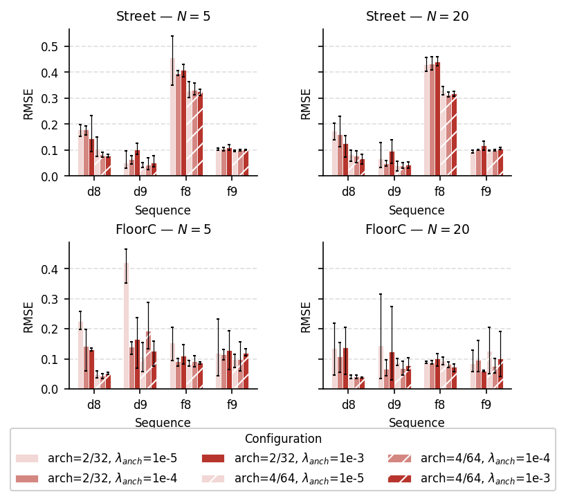
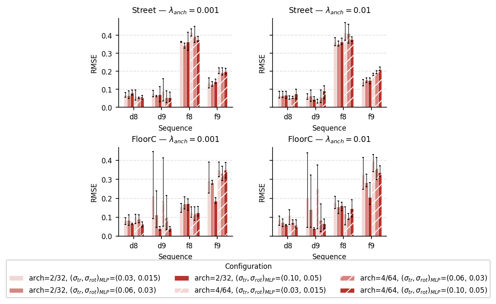
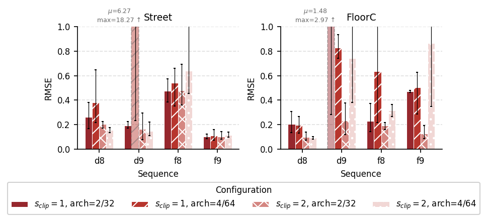
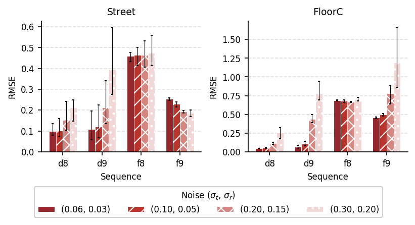
Observation Model & Resampling
Three observation model families (SDF, PPE, PPP) and three resampling strategies (contraction-based, Gumbel-softmax, OT) are ablated on the MoCap dataset. The PPP model achieves the best E2E-trained accuracy (0.102 m RMSE). The SDF-based structure offers the lowest latency (22.3 ms) and smallest memory footprint (1554 MiB), suitable for resource-constrained deployments. No significant difference was found between resampling strategies; Gumbel-softmax is adopted as the default.
| Configuration | RMSE μ [m] | Latency μ [ms] | Train time μ [s] | Infer. VRAM [MiB] | Train VRAM [MiB] |
|---|---|---|---|---|---|
| SDF | |||||
| Initial params | 0.627 | 29.24 | 67.96 | 1698 | 568 |
| Initial + E2E | 0.195 | 27.66 | 1157 | 1700 | 1912 |
| Tuned params | 0.281 | 22.30 | 292.8 | 1566 | 1972 |
| Tuned + E2E | 0.140 | 22.50 | 1330 | 1554 | 3224 |
| PPE | |||||
| Initial params | 0.217 | 214.9 | 683.3 | 4930 | 1758 |
| Initial + E2E | 0.112 | 210.4 | 7832 | 4910 | 8096 |
| Tuned params | 0.152 | 215.3 | 683.8 | 4930 | 1744 |
| Tuned + E2E | 0.112 | 209.7 | 7838 | 4910 | 8096 |
| PPP | |||||
| Initial params | 0.339 | 263.4 | 488.0 | 1994 | 832 |
| Initial + E2E | 0.116 | 261.0 | 5357 | 2094 | 3468 |
| Tuned params | 0.184 | 263.8 | 510.6 | 1994 | 676 |
| Tuned + E2E | 0.102 | 262.0 | 5341 | 2094 | 4732 |
Table 5: Observation model ablation. RMSE is mean deviation from ground truth across five runs. Hardware: Intel i9-14900F, NVIDIA RTX 4080 Super, 32 GB RAM.
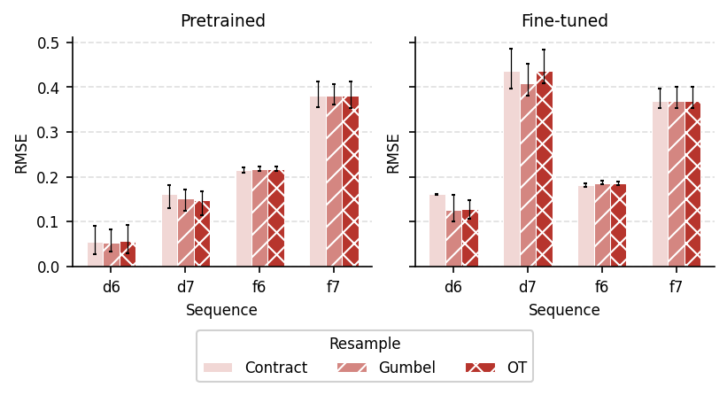